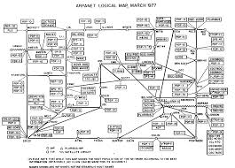

a historia das redes nao tem uma data nem mesmo um ano de lançamento, mas sua evolução é compreendida ao longo de um período.Isso porque ao considerarmos os eventos que mais tarde dariam impulso ao seu surgimento efetivo, os computadores nem mesmo existiam, pelo menos não na forma como estamos acostumados a imaginá-los.
o conceito nasceu ainda nos anos 60 quando havia intensas pesquisas para o desenvolvimento de tecnologias voltadas para comunicação por voz, as quais logo perceberam que poderiam ser usadas para transmissão de dados, já que as redes de voz usavam o conceito de transmissão de pacotes por meio de sinais elétricos nos fios.Mas foi apenas na década de 70 que surgiram as primeiras redes, embora ainda não se tinha um computador como temos nas redes hoje em dia, havia poucos mainframes os computadores eram enorme podiam ocupar uma sala inteira, existentes em apenas grandes empresas como governos e centro de pesquisa eram acessados por terminais e que era basicamente um teclado e monitor
nesse momento perseberam que era preciso criar uma liguagem para as maquinas comunicasem entre si uma maneira mais confiavel, e criaram protocolos o tcp/ip(transmission control protocol/internet protocol)que foi implantado pela Agência de Projetos de Pesquisa Avançada do Departamento de Defesa dos EUA (U.S. Department of Defense Advanced Research Projects Agency) ou darpa, o projeto foi nomeado de ARPANET em 1969 e que mais tarde daria origem para a internet
o protocolo ARPANET nao foi o tcp/ip mas sim o ncp(network control protocol) e logo se mostrou inadequado para gerenciar um grande volume de dados que o crescimento da rede demandaria.
Um tempo depois em 1972 foi finalmente lançada a ARPANET ela ja era uma rede de 15 nos que sao pontos de troca de dados de uma rede, cinco anos depois ja eram cerca de 100 nos entre os quais haviam os computadores do pentagono de centros de pesquisa e universidades como o mit, harvard stanford e Ucla e ate poucas empresas como a xerox
Cerca de uma década depois, nos anos 80, os computadores começavam tornar-se menores e mais acessíveis, graças ao desenvolvimento de processadores por empresas como Intel, IBM e Motorola, quando foi cunhado o termo PC (Personal Computer ou Computador Pessoal) a popularização dos computadores impulsionou ao mesmo tempo a proliferação das redes para comunicação dos PCs e da própria Internet.
é a conexão de dois ou mais dispositivos de forma que sejam capazes de trocar dados e compartilhar recursos assim, um notebook conectado corretamente a uma impressora seja por Wi-Fi, seja por cabo USB – é uma rede, bem pequena é verdade, mas é uma, visto que trocam informações e no caso do notebook, usa o recurso de impressão as duas condições podem trocar dados e compartilhar recursos – não precisam necessariamente serem verificadas para caracterização da rede basta apenas uma, em toda rede de computadores, por mais simples que seja em termos de dispositivos, deve ter regras básicas para que a comunicação aconteça de forma a garantir o envio seguro e eficiente dos dados e a isso dá-se o nome de protocolos de rede.
Uma rede para funcionar de acordo com o que vimos até aqui, precisa de dois grupos de componentes – hardware e software em termos de hardware, temos tanto os dispositivos que utilizamos e que são mais óbvios e conhecidos, como o notebook e o smartphone, mas há também dispositivos da Internet das Coisas (IoT), como câmeras IP, geladeiras, veículos autônomos, robôs, smartwatches, smartTVs, consoles de games e por fim, aqueles que fazem parte da infraestrutura, como servidores, switches, roteadores, modens, firewalls, etc.
No grupo do software, da mesma forma que temos o sistema operacional e os diversos aplicativos no notebook ou smartphone que fazem a interface com o hardware para nos entregar resultados, em uma rede também há programas com objetivo similar, seja instituindo os protocolos, seja manipulando-os e combinando-os por uma interface amigável, para executarmos ações, como os navegadores, clientes de e-mail e terminais
Um protocolo de rede é um conjunto de regras bem definidas e rígidas, bem como um conjunto ordenado de ações, segundo os quais os dados que transitam na rede são trocados.
Muitos desses protocolos nós usamos diariamente na Internet, uma vez que pode-se dizer que ela é a interligação de várias redes em escala global e por isso é também chamada de rede mundial de computadores.
Na verdade, ao fazê-lo em uma rede local, como no roteador Wi-Fi da sua casa, ele faz uso de dois IPs, sendo um no escopo da LAN (Local Area Network) e outro da WAN (Wide Area Network).
Para qualquer pessoa fora da sua rede doméstica, todos na sua residência têm o mesmo IP (escopo da WAN), mas internamente seu notebook tem um IP (escopo da LAN), o smartphone da(o) sua(eu) esposa(o) tem outro IP, a impressora sem fio tem um terceiro e assim por diante para cada dispositivo conectado ao roteador.
Quando você abre o navegador e acessa um site qualquer, as regras que determinam como se dá a comunicação entre o servidor web onde o site está hospedado e o navegador, são determinadas pelo HTTP (Hypertext Transfer Protocol).Atualmente na verdade, o comum e seguro, é o HTTPS e não mais o HTTP e que nada mais é do que o último com uma camada de segurança por meio de criptografia.
Para enviar e receber e-mails, para fazer upload de seus arquivos para a nuvem ou para jogar online, usa-se respectivamente o SMTP, POP2, FTP, TCP e UDP. Todos exemplos protocolos que determinam como os dados são controlados e transmitidos para cada situação e de acordo com a sua natureza.
https://www.hostmidia.com.br/blog/rede-de-computadores/